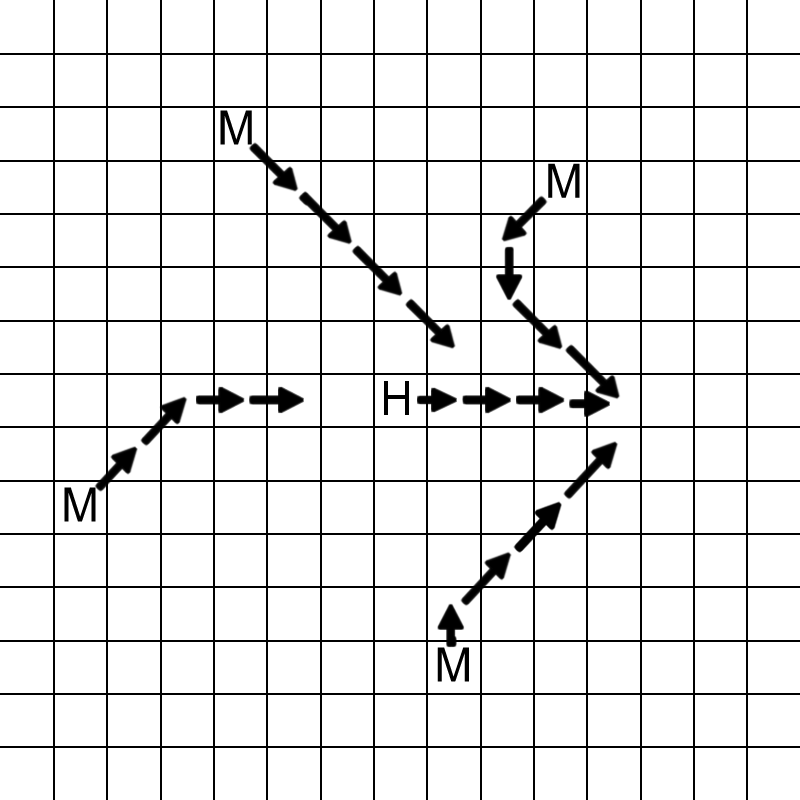

ICPC 2011 World Finals · Problem I
During an excursion to the desert at the 2011 ACM-ICPC World Finals, you come across an old Egyptian tomb. Unfortunately, opening the tomb turns out to be a bad idea: all of a sudden, what was just a few moments ago an empty desert has now become a desert crawling with grumpy mummies (you would be grumpy too if you were suddenly awakened after a few thousand years of peaceful sleep).2
Faced with this murderous mass of mad mummies, your only chance is to run for it and try to escape before they catch you. The question is: how long will it take before a mummy catches you, assuming neither you nor the mummies ever get tired?
We model the desert as a grid of squares. You and the mummies take turns making moves on the grid. You make the first move. In your turns, you can move to any of the eight squares adjacent to your current location, or you can choose to stand still. In the mummies’ turns, each mummy simply moves to the adjacent square that brings it closest to you (measured by Euclidean distance, assuming that you and all the mummies stand in the centers of their respective squares). It is possible for two mummies to occupy the same square.
A time step consists of your move followed by the mummies’ moves. A mummy catches you if it moves to the square where you are located, or if you move to the square occupied by the mummy. Of course, you try to avoid being caught for as long as possible. After how many time steps will you be caught?

The figure illustrates what might happen if you are being chased by four mummies. The square labeled H is your initial position, and the squares labeled M are the initial positions of mummies. After four time steps, you are caught by the mummy whose initial position was (3, 4) with respect to your initial position.
The input consists of several test cases. Each test case begins with an integer n (0 ≤ n ≤ 105) giving the number of mummies in the desert. The following n lines each contain two integers x and y, indicating that there is initially a mummy at coordinates (x, y) of the desert, where x and y are both bounded by 106 in absolute value. Your starting position is (0, 0), and no mummy starts at this position.
The last test case is followed by a line containing the number −1.
For each test case, display its test case number followed by the maximum number of time steps until you are caught (measured as the total number of turns that you get), or the word “never” if you can avoid capture indefinitely.
Follow the format of the sample output.
4 -3 5 3 4 -6 -2 1 -5 1 0 -1 -1
Case 1: 4 Case 2: never
2 Fortunately, after solving this problem, you woke up safe and sound in a hotel room in Florida. The enraged mummies had just been a dream. Or had they?